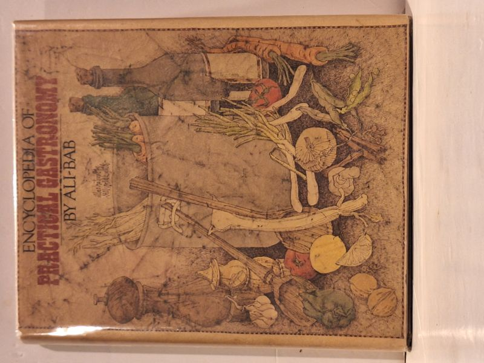

Encyclopedia of Practical Gastronomy
Ali-Bab (Henri Babinski) · McGraw-Hill Book Company, New York, 1974

C$65 · Good condition
Encyclopedia of Practical Gastronomy by Ali-Bab (Henri Babinski). McGraw-Hill, New York, 1974.
Hardcover with dust jacket. A monumental classic of French gastronomy, translated by Elizabeth Benson from the French "Gastronomie Pratique." Comprehensive treatment of ingredients, technique, and recipes from one of the great culinary references. Good condition: text clean and sound; dust jacket present with wear and age-tanning. No inscriptions or library markings.
Details
- Publisher: McGraw-Hill Book Company, New York, 1974
- Binding: Hardcover
- Condition: Good
- Dust jacket: Good
- ISBN: 9780070010628
- Category: Cookery